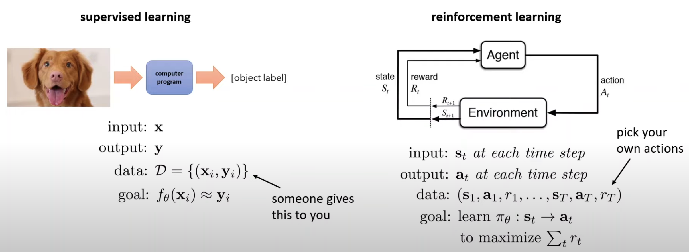
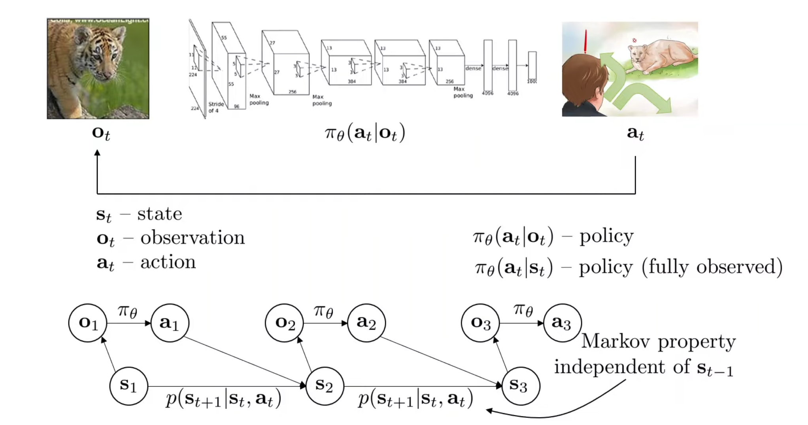
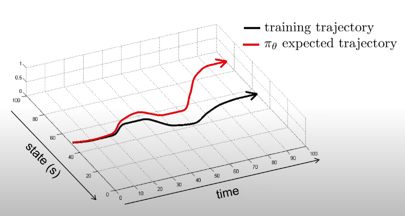
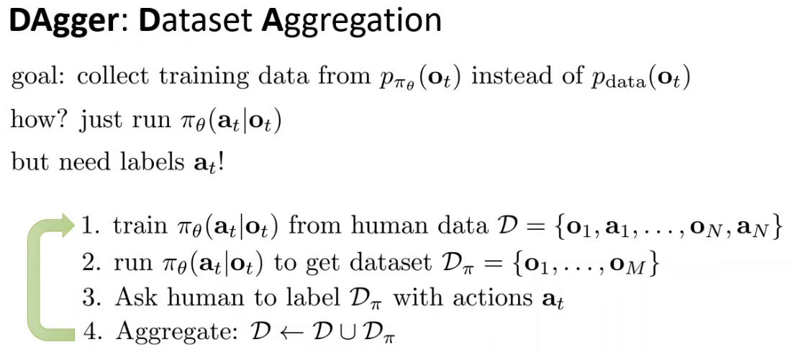
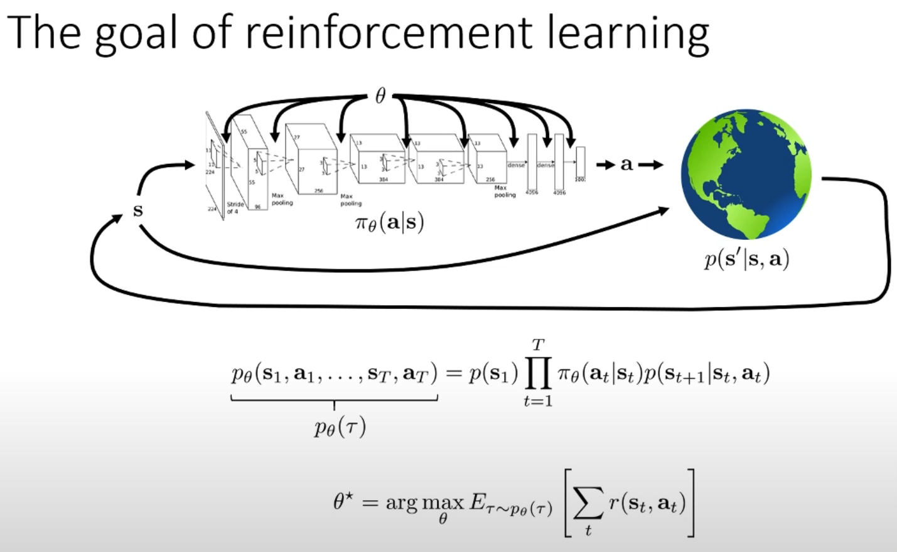
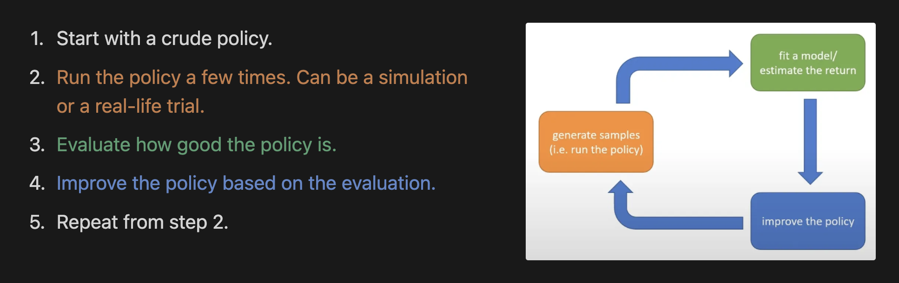

The good thing about RL is that it possesses the power to produce exceptional results which can’t be made by a human. It’s the way to create an alternate intelligence which works in different but better ways than a human. On the other hand, supervised learning focuses on replicating the best behaviours of humans, which might not be the best on an absolute scale but is still helpful and beautiful.
Some Important Terminologies
Borrowed from Sergey Levine’s Deep RL course, the below slides do a great job of getting the terminologies clear. Have a good look at them:


Note that observation and state are two different things. A good analogy would be to consider state as the detailed memory layout of a computer and the observation as the photo of the computer screen. It is possible to get the observation from the state but not the other way around.
Alos, the above diagrams shows the “Markov Property”, which means that the current state is enough to predict the future. However, this does not guarantee that the future is deterministic. It may be stochastic but knowing the past doesn’t really help reduce that randomness.
Behavioural Cloning
It belongs to a category of learning algorithms called “imitation learning” which basically refers to learning a policy which imitates human decisions. Behavioural cloning is a subset of this branch which studies how we can take the “supervised” approach to learning a policy. The data is tuples \((o_t, a_t)\) which can be acquired through humans (eg. hours of recordings of human driving). Once that is done, the policy (which will be a CNN in case of the self-driving problem) can be learned in the same way a classifier learns based on labelled data.
Does it work?
No. Because of a very fundamental modelling issue. We are training only on the “correct” samples. Our data doesn’t consists of “mistakes” and corresponding “corrections”. This is a problem because our policy might not be perfect and may predict incorrectly sometimes. This may not be a problem in supervised learning scenarios, but in policy-learning, wrong predictions put the model in unseen states, resulting in a wrong (or wronger!) prediction again. This error keeps compounding, which gives us a trajectory very different from the one we expected.

Solutions
Cleverly collect and augment your data. For eg, when training a self-driving model, some NVIDIA researchers used a smart trick to induce “mistakes” and “corrections” to the data. They equipped the care with a left and a right camera along with the central camera and labelled all the frames from the left camera with a “right” action and vice-versa. Too good, isn’t it?
What if we design a model which does very less mistakes, in the beginning too? This way, the model won’t find itself in unseen scenarios. First of all, what are the problems which prevent us from making a very good model?
Markovian assumption is a strong assumption. Humans are never markovian. Hence, the solution is to supply a few previous states along with the current state to the policy model. Easy, isn’t it? Now, there’s a small warning. This might not always help. Some information in the previous frames might be extensively correlated with future frames, confusing the model. I didn’t understand this fully, so more on this later.
If the data is multimodal, we might average out different modes leading to a bad prediction. The solution is to use more expressive continuous distributions. There are mainly 3 options:
A. Gaussian Mixture Models - The outputs of the neural network will be the means, variances and gaussian weights. Then, we can just maximise the log of the probability calculated using those outputs. Simple, but not as powerful as the other too!
B. Latent Variable Models - Take the conditional VAE as an example. More on this in the later lectures. For now, keep in mind that the random number added to the input chooses the mode which should be outputted.
C. Diffusion Models - Here, we learn a network which predicts a slightly better action given a bad action. This is repeated and we get a good action. Note that this model is responsible for outputting an action based on the given state.
Suppose we want to train a self-driving car to go to location p1. The naive way is to train a policy \(\pi_\theta (a|s)\) on data in which the expert drives to the location \(p_1\). But, the idea is that if we train a policy \(\pi_\theta (a|s, g)\) on data which contains samples having different target locations instead of just one. It turns out the second way gives much better performance on the task of reaching location \(p_1\), because it’s training data contains a lot of mistakes and corrections which are helpful. This is how multitask learning can help.
Wait, wait, wait. Instead of tinkering with policy, what if we change the data collection procedure so that it contains the unfamiliar territories which are problematic for our policy? That’s the DAgger algorithm. It’s simple yet elegant.

DAgger Algorithm
Why need RL then? What’s the goal of RL?
So, the thing with IL is that the decisions are based on “current” rewards, not “latent” rewards. This is not how humans work. Humans take decisions such that the reward after a few actions is high, which involves planning. So, the goal of RL is design a policy which takes decisions which might not lead to immediate rewards but may turn out to be rewarding after some actions. Basically, we want to give “farsightedness” to a policy and that can’t be done through IL.

To be more precise, the goal of RL is to design a policy which provides the highest expectation (over multiple trajectories) of the sum of the reward obtained at each state. This is how we induce “planning” or “farsightedness” in a model.
NOTE: In RL, we always care about expectations of rewards. This allows us to perform gradient descent because the expectations are always smooth, even though the rewards are discrete. For example, if we want to design a self-driving car based on the reward function which gives -1 if the car falls off the road and +1 otherwise. Here, the reward is discrete but its expectation is continuous if we model the reward using a Bernoulli distribution. Hence, we train a policy which maximises the “expected” reward rather than the reward itself, so that gradient descent-based learning is possible.
Anatomy of an RL Algorithm

Evaluating the RL policy
So, as discussed above, we want to find a policy which maximises the expected sum of rewards over the trajectories. In other words, we want to find a policy, which, if used to select the next action, usually gives us a high value when we add the rewards obtained after each action. In mathematical terms, our target function is as follows:
\[ E_{\tau \sim p_\theta(\tau)} \bigg[ \sum_t r(s_t, a_t) \bigg] \]
But, how to calculate it? We realise that it is difficult to calculate when we rewrite the above expression as:
\[ E_{s_1 \sim p(s_1)}\bigg[ E_{a_1 \sim \pi(a_1|s_1)} \bigg[r(s_1, a_1) + E_{s_2 \sim p(s_2|s_1, a_1)}\big[ E_{a_2 \sim \pi(a_2|s_2)} \big[r(s_2, a_2) + \ldots \big] \big] \bigg] \bigg] \]
So many expectations, right? This definitely needs to be simplified. Let’s introduce two abstractions which help us simplify the calculation of this term.
1. Q-Function - \(Q^{\pi_\theta} (s_t, a_t)\)
Suppose you are at a state \(s_t\) and you take an action \(a_t\) and you are following the policy \(\pi_\theta\). Then, if you keep doing actions according to the policy \(\pi\) till you reach the terminal state \(s_T\). Now, if you somehow calculate the expected reward at each state and sum all of them up, you get the Q-value of the tuple \((s_t, a_t)\). In other words, this fancy-named function stands for the sum of expected rewards at each state, given that you start from \(s_t\) by taking an action \(a_t\) and keep making decisions according to a policy \(\pi_\theta\). In mathematical terms,
\[ Q^{\pi_\theta}(s_t, a_t) = \sum_{t'=t}^T E_{\pi_\theta}[r(s_{t'}, a_{t'})|s_t, a_t] \]
Intuitively speaking, the Q-value of \((s_t, a_t)\) represents the “quality” of taking an action \(a_t\) at a state \(s_t\).
(Note that we haven’t talked about the difficulties in calculating Q-values.)
2. Value Function - \(V^{\pi_\theta}(s_t)\)
Now, if you understand the meaning of the Q-function, understanding value function is easy. Intuitively speaking, the value of a state \(s_t\) represents the importance of that state, from a reward perspective. It helps us evaluate how “good” the state is. This is very important because once we find a way to get the “value” of a state, designing an good policy becomes very easy because the policy just needs to choose actions which lead to “good-value” states! In mathematical terms, we can write it as:
\[ V^{\pi_\theta}(s_t) = \sum_{t'=t}^T E_{\pi_\theta}[r(s_{t'}, a_{t'})|s_t] \]
This expression can be further simplified if we utilised the Q-function:
\[ V^{\pi_\theta}(s_t) = E_{a_t \sim \pi_\theta(a_t|s_t)} [Q^{\pi_\theta}(s_t, a_t)] \]
One more way to interpret the value function is that it is the average of the qualities of all the actions that can be taken from state \(s_t\).
Easy, isn’t it? So, now these abstractions are clear. But how can we use them to simplify our RL target function? If you look closely, it is easy to notice that:
\[ E_{\tau \sim p_\theta(\tau)} \bigg[ \sum_t r(s_t, a_t) \bigg] = E_{s_1 \sim p(s_1)} V^{\pi_\theta}(s_1) \]
Improving the policy based on evaluation
So, now we have the tools to evaluate the quality of an action (i.e. Q-function) and to evaluate the “goodness” of a state (Value function). Great! Now the question is, “how can we use these tools to modify the policy?”. It turns out that there are two ideas:
Idea 1: “I want my agent to always take the “best” action!” (More exploitation)
Design a new policy \(\pi_\theta'\) such that \(\pi_\theta'(a^*|s)=1\), where \(a^* = \arg \max_aQ^{\pi_\theta}(s, a)\). Basically, the new policy should always take the action which had the highest quality according to the previous policy.
Idea 2: “I want my agent to select one out of some above-average actions!” (More exploration!)
Design a new policy \(\pi_\theta'\) such that \(\pi_\theta'(\hat a|s)> \pi_\theta(\hat a|s) \text{ if } Q^{\pi_\theta}(s, a)>V^{\pi_\theta}(s)\). In other words, we can improve the policy by increasing the probability of selection of actions which were “above-average”.
That’s all for now. We will go into improving the policy in the next blog. Thanks for reading! Hope you liked it. If you find any mistakes or inaccuracies, feel free to send an email to shah.15@iitj.ac.in.
(Credits: Slides borrowed from the amazing Deep RL course by Sergey Levine)